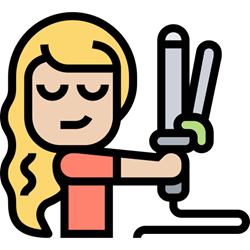

Estilismo
CCT: 30EBH0415E
Duración: 18 meses
Semestre I
- Conocimiento básico del cabello
- Diagnóstico del cabello
- Corte de cabello I
- Peinado I (trenzado, peinado infantil)
- Depilación con cera (bozo, ceja, patillas, rostro, axilas, piernas)
- Corte de cabello II
- Colorimetría I (tintes, aclaración, manejo de canas)
Semestre II
- Peinado II (alaciado exprés, ondas, rizos, creppé)
- Diseño de ceja (planchado, depilación)
- Aplicación de pestañas (tira)
- Cuidados faciales (mascarillas naturales)
- Corte de cabello III
- Colorimetría II (extracción, efectos de color)
Semestre III
- Peinado III (social y de evento)
- Manicura y pedicura
- Uñas acrílicas, esculturales, polish
- Aplicación de pestañas 1 x 1 y 3 x 3
- Corte de cabello IV
- Maquillaje profesional y artístico
- Permacología
- Tratamientos capilares
- Integral